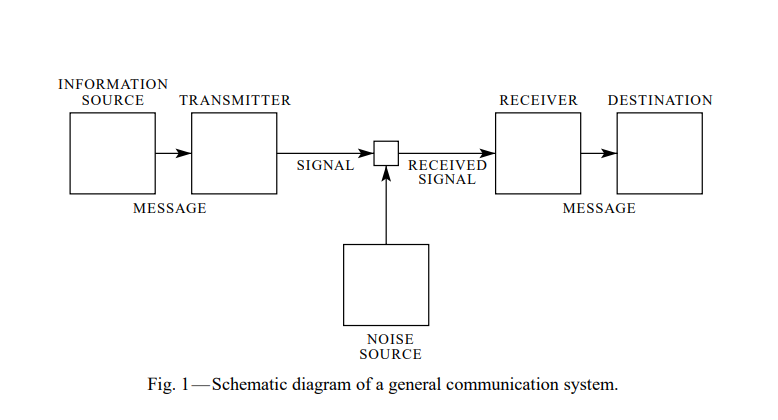
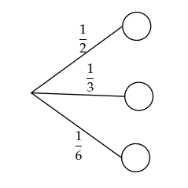
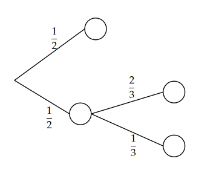
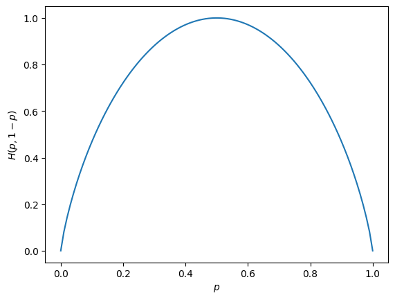
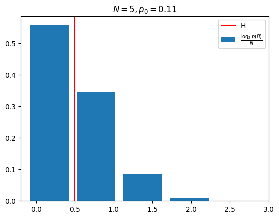
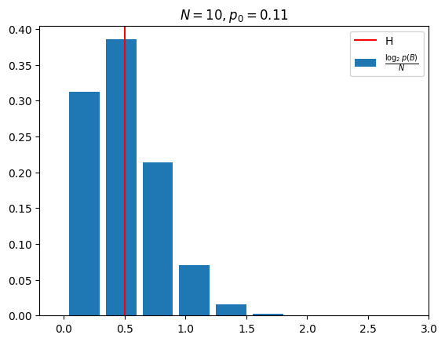
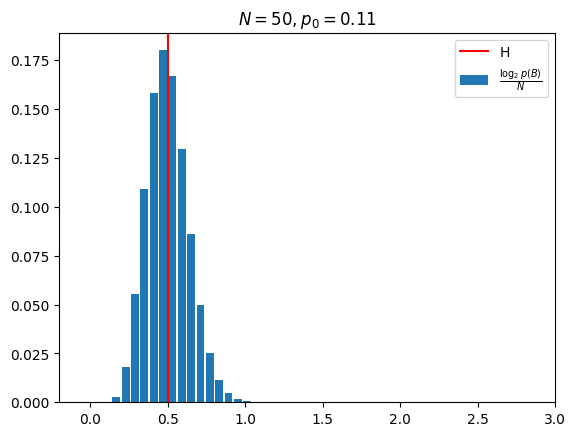
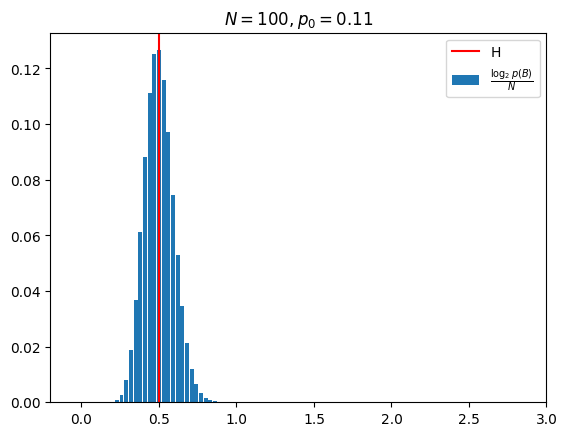
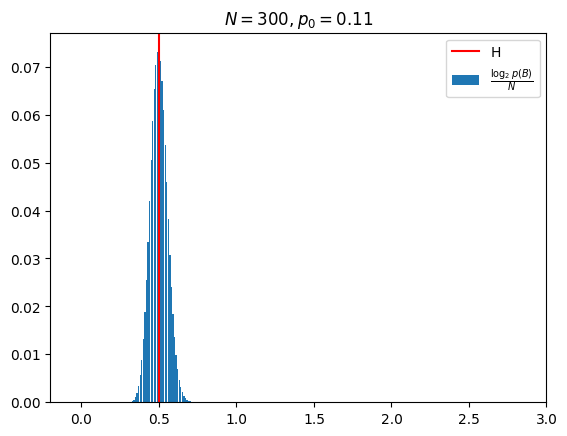

אנטרופיה#
בפרק הזה האחרון של הקורס אני הולך לעקוב אחרי שני מאמרים [1] [2] שכתב Shannon בשנות ה-40 שבגדול פתחו את התחום של תורת האינפורמציה והוכיחו כמה משפטים מאוד גלובאלים ומאוד שימושיים.
מה זה ביט?#
אנחנו שחיים בעולם דיגיטלי כבר רגילים לשמוע על ביטים בכל מקום. חלקכם אולי אפילו חנונים מספיק כדי לספור בבינארית. אבל המחשבה לספור בביטים הגיע מהמחשבה לספור אפשרויות או כמות בחירות שאפשר לייצג. לדוגמא כדי לייצג את התוצאה של שתי בחירות כן לא צריך 2 ביט. האמת שההגדרה הזו לא מאוד חשובה והיא יותר עיניין של קונבנציה. אבל באופן כללי היינו רוצים לומר משהו בסגנון הבא:
אם יש לנו \(M\) בחירות אפשריות בסיכוי שווה אז אנחנו צריכים \(\log_{2}M\) ביטים על מנת לייצג את התוצאה.
השאלה הבסיסית ששאנון ניסה לענות עליה במאמר הראשון היא כמה מידע אפשר לשלוח על גבי ערוץ תקשורת. בשביל זה צריך להגדיר כמו שצריך מה זה אומר ערוץ תקשורת.
מודל של ערוץ תקשורת#

יש לנו 5 חלקים לדבר עליהם. על החלק של הרעש דיברנו מספיק בפרק הקודם.
מקור האינפורמציה - בגדול משהו שרוצה להעביר אינפורציה כלשהי ויש לו כבר קידוד כלשהו לאינפורמציה. בין אם זה קובץ ששמור לכם על המחשב או תמונה שמיוצגת בעזרת פיקסלים. החלק החשוב הוא שהייצוג יכול להיות כל דבר.
משדר - מקודד את המידע שהמקור העביר לו בצורה כלשהי. דיברנו הרבה בקורס על מודולציות ושיטות אפנון. החלק החשוב לזכור כאן היא שהצורה שהמשדר עובד היא גנרית לחלוטין הוא מקבל את המידע ממקור האינפורמציה ומקודד אותו בצורה כלשהי. ניתן כמה דוגמאות עוד רגע.
מקלט - עושה את הפעולה ההפוכה מהמשדר
יעד - הנמען של ההודעות
הערוץ#
נדבר עכשיו על החלק בין המשדר למקלט. לחלק הזה נקרא ערוץ וננסה להתחיל לאפיין אותו. שאנון מצא הגדרה מעניינת (וגאונית לדעתי) לקיבול של ערוץ. אנחנו יודעים שבאינפורמציה אנחנו מקודדים את “כמות” האפשרויות. ולכן שאנון הגדיר מדד \(N\left(T\right)\) אשר מוגדר בתור מספר האותות הניתנים לשליחה על הערוץ בעלי אורך T.
דוגמא - הודעות בלתי תלויות באורכים משתנים
נניח שיש לנו \(n\) סוגי אותות מותרים. כל אחד עם אורך \(t_{n}\). כמה אותות מותרים יש לנו באורך \(T\). ממש בקלות ניתן לרשום נוסחת רקורסיה:
איך ניתן למצוא ככה את N? אז האמת שזה לא פשוט אבל אפשר להראות שהפתרון הוא הפתרון למשוואה מאפיינת:
וצריך לקחת את השורש הכי גדול \(X_{0}\) ולהעלות בחזקת \(T\). כלומר:
דבר אחד חשוב לשים לב אליו הוא ש\(\lim_{T\rightarrow\infty}\log_{2}N\left(T\right)=T\log_{2}X_{0}\) כלומר שלוג כמות האפשרויות גדל לינארית ב-T. או לפחות שואף ללינאריות ב-T.
לאור האינטואיציה מהדוגמא האחרונה ננסה להגדיר את הקיבול של הערוץ בתור “כמות המידע שאפשר לשלוח בפרק זמן T בממוצע” כלומר:
למה כמות המידע? כי המספר \(\log_{2}N\left(T\right)\) הוא בדיוק כמות הביטים שאנחנו צריכים כדי לייצג את כל ההודעות השונות \(N\left(T\right)\). נשים לב שבדוגמא שלנו הגבול אכן קיים.
אינפורמציה#
סבבה, אז יש לנו הגדרה לקיבול של ערוץ. מה זה עוזר לנו ומה בכלל היא אומרת? כמה מידע אפשר לשלוח על ערוץ שהקיבול שלו הוא \(C\). בשביל זה צריך לדבר על אינפורמציה. נשאל איך בכלל אפשר לאפיין את מקור האינפורמציה (הבלוק הראשון בסרטוט)
את התשובה ששאנון נתן אתם כבר מכירים. נתחיל מלתת דוגמא ולאט לאט נסבך אותה.
מקור מידע - שליחת הודעת טקסט
נניח שאתם רוצים לשלוח הודעת טקסט. נגיד שספר או אפילו את הסיכום הזה. כמה אינפורמציה מכיל הטקסט?
נעשה לעצמנו חיים קלים ונניח שכל האותיות הן רק האותיות הרגילות (26 מהן) ובנוסף יש רווח ונקודה. בסך הכל 28 אפשרויות.
אנחנו רוצים למצוא דרך “לקודד” את הטקסט שלנו לביטים ולתת מדד לכמה ביטים נצטרך על מנת לקודד את הטקסט. אם לדוגמא הייתי אומר לכם ש99% מהאותיות בטקסט הן האות “א” כנראה שיכולתם לדחוס את השמירה שלו מאוד. נתחיל ממודל נאיבי שמניח שאין תלות בין האותיות אבל לכל אחת יש שכיחות \(p_{i}\) שבו היא מופיעה.
אם היינו רוצים לסבך את המודל היינו יכולים להניח שכל אות תלויה באות לפניה או ב-10 האותיות שלפניה או באופן כללי שיש פונקציית PDF שתלוייה ב-\(n\) אותיות אחורה.
נשים לב שאנחנו מקיימים כאן את אותו דיון שהוביל אותנו להגדיר תכונות של אותות אקראיים ואכן זה לא מפתיע ששאנון בחר לאפיין מקור מידע כך:
מקור מידע הוא תהליך אקראי סטציונרי וארגודי
מעכשיו נתעסק במקורות מידע חסרי זיכרון או לבנים. כלומר שכל הודעה לא תלויה בהודעות שלפניה. יש גם הכללות לאיך מחשבים את כמות האינפורמציה למקור מידע עם הודעות תלויות אבל לא ניכנס לזה כאן.
אנטרופיה#
נרצה להגדיר מדד לכמות האינפורמציה שיש בכל הודעה (סימבול). נחשוב על הבחירה של סימבול בתור עץ בחירות עם סיכויים על כל ענף.
לדוגמה אם היו לנו שלושה סימבולים בעלי סיכויים \(p_{A}=\frac{1}{2},p_{B}=\frac{1}{3},p_{C}=\frac{1}{6}\) יכולנו לייצג את זה ככה:

למה הכוונה? יש כאן “הטלת קוביה” עם שלוש פאות (לא מאוזנות) אשר כל פעם בוחרת את הסימבול הבא. נשים לב שייכולנו לבחור סימבולים בתהליך אחר עם שני מטבעות. בהתחלה מטילים את המטבע אם יוצא פלי הסימבול הוא \(A\). אם יוצא עץ מטילים מטבע נוסף הפעם לא מאוזן (שליש סיכוי לפלי). אם יוצא בו פלי הסימבול הוא \(C\) ואם יוצא עץ הסימבול הוא \(B\).
אפשר לסכם את זה בתרשים:

נשים לב שהתוצאה הסופית היא זהה. כלומר הסיכויים לקבל \(A,B,C\) הם אותו הדבר בשני המצבים. נדרוש ממד האינפורמציה שלנו \(H\) לקיים כמה תכונות:
הוא יהיה פונקצייה רציפה של הסיכויים \(p_{i}\) לקבל כל סימבול
אם כל הסיכויים שווים ויש \(n\) סימבולים אז H הוא מונוטוני עולה ב-\(n\). זה הגיוני משום שיותר אפשרויות אומר יותר אינפורמציה
אם שוברים בחירה לשתי תתי בחירות (כמו בדוגמא) אז האינפורמציה של הבחירה המקורית צריכה להיות שווה לסכום משוקלל של האינפורמציה של הבחירות החדשות. כאשר המשקל הוא מה הסיכוי לעשות כל אחת מהבחירות.
התכונה המבלבלת היא כמובן 3. נדגים בעזרת הדוגמה ממקודם. יש לנו את האינפורמציה של כלל התהליך אשר שווה \(H\left(\frac{1}{2},\frac{1}{3},\frac{1}{6}\right)\). ויש לנו את האינפורמציה של כל אחת משתי הבחירות \(H\left(\frac{1}{2},\frac{1}{2}\right)\) ו- \(H\left(\frac{2}{3},\frac{1}{3}\right)\). אבל הבחירה השנייה קורת רק בחצי מהמקרים ולכן נדרוש כי:
למה שנרצה את זה? הסיבה היא שאנחנו מנסים לקודד בצורה כלשהי את “כמות הבחירה” שיש לנו כשאנחנו בוחרים כל סימבול חדש ולכן אם אפשר לפצל כל בחירה לכמה בחירות קטנות יותר היינו רוצים שיהיה קשר בינהן.
אפשר לחשוב על \(H\left(\frac{1}{2},\frac{1}{3},\frac{1}{6}\right)\) בתור כמות הביטים שצריך על מנת לשמור את הבחירה של הסימבול. על \(H\left(\frac{1}{2},\frac{1}{2}\right)\) בתור כמות הביטים שצריך לשמור עבור האם הסימבול הוא \(A\) או לא ואז בחצי מהפעמים צריך לשמור עוד ביטים על מנת להבחין בין \(B\) ל-\(C\). כמה ביטים? \(H\left(\frac{2}{3},\frac{1}{3}\right)\).
מסתבר שיש רק פונקציה אחת (עד כדי פקטור קבוע) אשר מקיימת את התכונות האלו:
\[H\left(p_{1},...,p_{N}\right)=-K\sum_{i=1}^{N}p_{i}\log_{2}p_{i}\]
כאשר \(K\) הוא קבוע חיובי שמעכשיו ניקח להיות 1.
מה זאת הפונקציה הזו בכלל?
נשים לב שאם יש לנו \(p_{i}\approx\frac{1}{M}\) אפשר לומר שאנחנו בעצם מקודדים בחירה בין \(M\) אפשרויות. למדד \(\log_{2}\frac{1}{p_{i}}\) פשוט קראנו כמות הביטים. ולכן קיבלנו כי \(H\) שמעכשיו נקרא לה האנטרופיה היא כמות הביטים הממוצעת פר סימבול.
\(H\left(p_{1},...,p_{N}\right)=\mathbb{E}\left[\log_{2}\frac{1}{p_{i}}\right]\) היא כמות הביטים הממוצעת פר סימבול.
נסתכל על הפונקציה \(H\) עבור מטבע בודד (או במילים אחרות משתנה שמתפלג ברנולי)
או בסרטוט:

מקרים מעניינים:
הפונקציה מקבלת ערך מקסימום ב-\(p=\frac{1}{2}\) והערך הוא 1. כלומר שכדי לייצג הטלת מטבע אחת הוגנת צריך ביט 1
עבור \(p=0,p=1\) האנטרופיה היא 0 כלומר אין שום אינפורמציה בהטלה. זה הגיוני כי התוצאה ידועה מראש.
אבל מה קורה עבור הערכים באמצע? מה זה אומר ש-\(H\left(0.11,0.89\right)=0.5\) מה זה אומר בכלל חצי ביט? אם היינו רוצים לשמור את התוצאה של הטלה בודדת היינו צריכים לפחות ביט אחד ולכן גם בתוכלת היינו צריכים ביט אחד.
התשובה לזה היא שמה שחשוב לנו הוא מה שקורה ברצפים ארוכים. ככל שהרצף יהיה ארוך יותר נוכל “להשתמש” יותר בזה שהסטטיסטיקה לא מאוזנת. לדוגמא כאן אם נסתכל על רצפים באורך 2 פתאום יהיו לנו 4 אפשרויות (נסמן את שתי תוצאות ההטלה ב-\(A\) ו-\(B\)-):
עכשיו יש לנו יותר חופש פעולה. את הרצף \(BB\) נשמור בעזרת הביט 0. את הרצף \(AB\) בעזרת 10 את \(BA\) בעזרת 110 ואת \(AA\) בעזרת 111. כמה ביטים נשמור בממוצע?
כלומר עברנו לייצג סימבולים של שני ביטים במקום 1 וכבר הצלחנו לדחוס את המידע. כמה נוכל לעשות את זה? אז הגאונות במאמר היא שהוא מראה שהגבול הוא \(H\). כלומר לא נוכל ליצור שיטת קידוד יותר יעילה מאשר כשאת בה: \(\mathbb{E}\left[\frac{\#bits}{symbols}\right]=H\)
איך מראים את זה בכלל? אנחנו נדבר רק על המקרה בו יש לנו סימבולים בלתי תלויים וכל אחד יש סיכוי \(p_{i}\) כלשהו.
רצפים ארוכים#
אבחנת המפתח היא על הסטטיסטיקה של רצפים ארוכים. מה יקרה אם ניקח את הדוגמא ממקודם אבל נסתכל על רצפים באורך 1000?
נשאל מה הוא הרצף “הסביר”?
נשים לב שיש לנו שתי תופעות. יש רצפים ספציפים שהסיכוי לקבל אותם גבוה יותר מרצפים אחרים. בדוגמה שלנו היה את \(BB\) אבל אם אין לנו חשיבות לסדר אז יש “סוגי” רצפים שיש להם יותר אופציות. בדוגמא שלנו היא את \(BA\) ואת \(AB\).
התכונה שעניינה את שאנון היא מה הוא הסיכוי לשלוף את הרצף ששלפתי. זה מבלבל אז אני אסביר. לכל רצף יש סיכוי מסויים לשלוף אותו \(p\). ונניח שאתם שולפים 1000 רצפים כלשהם ועושים היסטוגרמה לערך ה-\(p\) שלהם. מה תקבלו?
נניח בדוגמה שלנו יש סיכוי של \(0.7921\) לשלוף רצף שה-\(p\) שלו הוא \(0.7921\) אבל יש סיכוי של \(2\cdot0.0979\) לשלוף רצף שה-\(p\) שלו הוא \(0.0979\).
מסתבר שברצפים ארוכים ריבוי האפשרויות לסדר רצפים מנצחת רצפים נדירים שהסיכוי שלהם גבוה יותר משל השאר. איך תיראה ההיסטוגרמה?
שאנון הצליח להוכיח שככל שהאורך עולה היא נהיית צרה יותר (כרצוננו) סביב מספר בודד. מה הוא המספר הזה? אתם יכולים לנחש כבר. המספר הוא \(\hat{p}\rightarrow2^{-N\cdot H}\).
ניסוח מתמטי של המשפט
לכל \(\varepsilon>0,\delta>0\) קיים \(N_{0}\in\mathbb{N}\) כך שכל \(N>N_{0}\) הרצפים באורך מתחלקים לשתי קבוצות:
קבוצה שהסיכוי לשלוף ממנה רצף קטנה מ-\(\varepsilon\)
קבוצה בה ה-\(p\) של כלל הרצפים מקיים:
ניתן דוגמה להיסטוגרמה כמו שדיברתי מקודם רק שהפעם לא נעשה היסטוגרמה ל-\(p\) אלא ל-\(\frac{-\log_{2}p}{N}\)
ניקח תמיד מטבע שעבור הטלה בודדת הוא \(0.11,0.89\) כמו מקודם
    
ממש רואים שההתפלגות הולכת ונהיית צרה יותר סביב \(H\).
מה זה אומר לנו בכלל? זה אומר שברצפים מאוד מאוד ארוכים אפשר לחשוב על כל רצף בתור סימבול. כמה רצפים יש? \(M^N\) רצפים (\(N\) אורך הרצף ו-\(M\) כמות האפשרויות לסימבול בודד.)
הסיכוי של כל הרצפים הוא בערך זהה ושווה לפי המשפט ל-\(2^{-N\cdot H}\)
כלומר אפשר לייצג כל רצף כזה בעזרת \(N\cdot H\) ביטים וככה נקודד בממוצע \(H\) ביטים לסימבול!
הקידוד יותר יעיל כלל שאנחנו מקודדים רצפים ארוכים יותר ביחד
אי אפשר לקודד יותר יעיל מאשר \(H\) ביטים לסימבול!
קיבול של ערוץ תקשורת#
אבל מה כל זה עוזר לנו? נניח שיש לנו מכור אינפורמציה עם אנטרופיה \(H\) ויש לנו מערכת תקשורת. השאלה היא האם יש לנו יכולת לשלוח את המידע בעזרת מערכת התקשורת שלנו. אז כמובן שאפשר לשאול עבור מערכת נתונה האם היא מתאימה אבל היינו רוצים לשאול שאלה כללית יותר.
בהינתן רוחב פס נתון ו-SNR נתון מה הוא קיבול הערוץ המקסימלי שניתן להגיע אליו?
נסמן את רוחב הפס שלנו ב-\(\Delta f\) וה-SNR יהיה \(SNR=\frac{\left\langle P_{sig}\right\rangle }{\left\langle P_{n}\right\rangle }\).
רוחב הפס שלנו יהיה מוגדר בהרצים ולמען הנוחות נניח שהאות הוא סביב תדר 0 ומודדים את רוחב הסרט של התדרים החיוביים בלבד. כלומר התדר המקסימלי הוא \(f_{max}=\Delta f\).
נזכר עכשיו שכבר יש לנו את הכלים לענות על השאלה הזו. הגודל שאנחנו צריכים לחשב הוא \(N\left(T\right)\) כלומר כמות הודעות שונות ניתנות להפרדה שאנחנו יכולים לשדר בזמן T.
איך בכלל ניגשים לזה? יש אינסוף אפשרויות לאותות שונים. ואיך בכלל ממדלים אות שהוא גם חסום בזמן כלומר באורך \(T\) אבל גם חסום ברוחב הסרט \(\Delta f\). אין דבר כזה בכלל
מרחב האותות - הגבלת רוחב הסרט#
המפתח לבעיה הזו הוא מפשט הדגימה. אם יש לנו אות חסום ברוחב סרט \(\Delta f\) ניתן לייצג אותו על ידי דגימות במרווחים של \(\Delta t=\frac{1}{f_{s}}\le\frac{1}{2f_{max}}=\frac{1}{2\Delta f}\)
נשים לב שבגלל שאנחנו סופרים את רוחב הסרט מתדר 0 אנחנו מסתכלים על דגימות ממשיות על מנת לייצג את הסיגנל.
נגדיר הודעות באורך \(T\) כהודעות שהדגימות שלהן הן בטווח זמן \(T\). כמה דגימות יהיו לנו?
זה אומר שכל הודעה חוקית (ללא קשר להאם אפשר להפריד אותן או לא) היא וקטור \(2T\Delta f\) מימדי. אשר מייצג את הסיגנל:
עד כאן השתמשנו ברוחב הפס של הסיגנל כדי להגדיר את “מרחב האותות” האפשריים. עכשיו צריך להתחיל להשתמש ב-SNR.
הפרדה בין אותות שימוש בעוצמה#
נניח לרגע שאנחנו מגבילים את עצמנו לאותות שעוצמת השידור הנדרשת עבורם קטנה מאשר \(\left\langle P_{sig}\right\rangle \). איזה אותות במרחב האותות מייצגים לנו את זה?
נשתמש באורתוגונליות של ה-\(sinc\) השונים על מנת לחשב את האנרגיה שלנו:
כלומר שעבור הספק ממוצע \(\left\langle P_{sig}\right\rangle =\frac{E}{T}\) נקבל שהאותות חייבים לקיים:
ולכן אם אנחנו מגדירים הספק מקסימלי אנחנו מגבילים את מרחב הסיגנלים שלנו לכדור (\(2T\Delta f\) מימדי).
על מנת לעבוד בקורדינטות נוחות ושכמות המימדים לא תשנה לא נו את המספרים נגדיר קורדינטות חדשות לכל סיגנל:
עבורן אנחנו בתוך כדור ברדיוס:
ומה עם הרעש? אז לכל נקודה של סיגנל כזה נוסף רעש. אנחנו נניח רעש גאוסייני והאמת שזאת ההנחה הכי מחמירה שאפשר לקחת. נראה בהמשך איך מכלילים לרעשים עם PSD אחר.
גם הרעש הוא חסום ברוחב הפס ואם הוא לא אז ניתן להעביר אותו בפילטר כך שכן יהיה. ולכן גם הוא מיוצג על ידי מספר זהה של דגימות. ובאופן כללי הוא פשוט מרעיש לנו את המספרים \(x_{n}\).
אם נסמן את הספק הרעש ב-\(\left\langle P_{noise}\right\rangle \) ונשאל איך מתפלג תוספת הרעש לאחת הקורדינטות כלומר \(\xi_{n}\). אנחנו יודעים שהממוצע הוא 0 וסטיית התקן בריבוע אמורה להיות:
ולכן:
אוקי איך התפלגות כזו נראית? וספציפית אנחנו לא מאוד מעוניינים בכיוון. כלומר אנחנו רוצים לדעת איך נראית ההתפלגות של גודל הרעש. וספציפית לראות איך זה נראה מבחינת הספק.
אבל נירמלנו מקודם את הקורדינטות שלנו ולכן צריך לנרמל גם את הקורדינטות של הרעש:
זה אומר שכל סיגנל שלנו מיוצג על ידי:
נשים לב שכל אחד מהשמתנים \(\xi_{n}\) מתפלג גאוסיינית עם ממוצע 0 אבל הריבוע שלהם כבר מתפלג אחרת. נרצה לדעת מה הממוצע וסטיית התקן שלו.
זה אומר שהמרחק שהרעש \(\vec{\zeta}\) ירחיק אותנו מהאות המקורי \(\vec{y}\) מתפלג גאוסיינית (על פי משפט הגבול המרכזי). עם תוכלת \(\left\langle P_{noise}\right\rangle \) וסטיית תקן \(\sqrt{\frac{\mathbb{V}\left[\xi_{n}^{2}\right]}{2\Delta fT}}\) או במילים אחרות ככול שיש יותר דגימות כלומר \(2\Delta fT\) גדול יותר גודל הסטייה נהיה פחות ופחות משתנה ושואף להיות פשוט ערך מסויים. זה אומר בגדול שהודעות הן כמו “כדורי ביליארד” כלומר סביב כל נקודה של אות אפשרי יש כדור קשיר של אפשרויות שהרעש מזיז אותו אליהן. כל מה שנשאר כדי לענות על השאלה כמה בין כמה הודעות ניתן להבחין הוא לשאול כמה כדורים נכנסים בכדור עם רדיוס גדול יותר.
מרכזי הכדורים שלנו צריכים לשבת בכדור עם רדיוס \(\sqrt{\left\langle P_{noise}\right\rangle }\) כלומר אנחנו צריכים לשאול כמה כדורים ברדיוס \(\sqrt{\left\langle P_{noise}\right\rangle }\) נכנסים בכדור עם רדיוס \(\sqrt{\left\langle P_{sig}\right\rangle +\left\langle P_{noise}\right\rangle }\). תשובה נאיבית שהאמת שהיא מדוייקת בגבול של מספר מימדים עולה היא פשוט לעשות חלוקת נפחים. לכדור ברדיוס \(r\) יש נפח פרופורציונלי ל-\(r^{dims}\) ולכן:
ולסיכום:
קיבול ערוץ עם רוחב סרט \(\Delta f\) ועם SNR נתון הוא \(C=\Delta f\log_{2}\left(1+SNR\right)\)